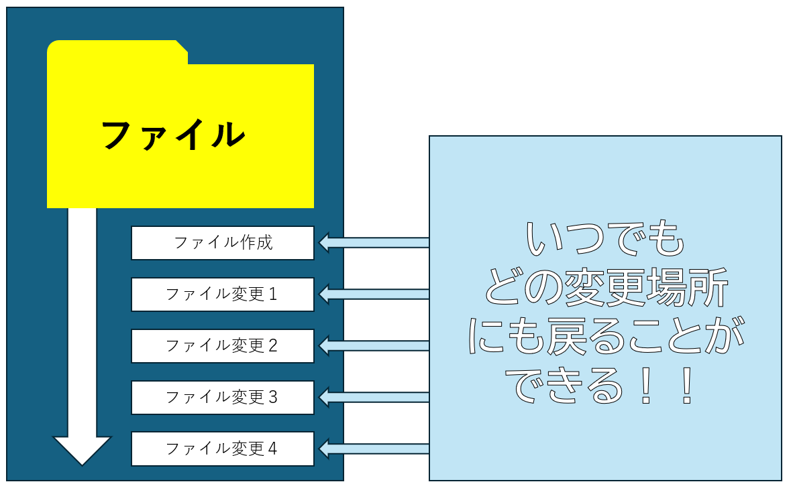
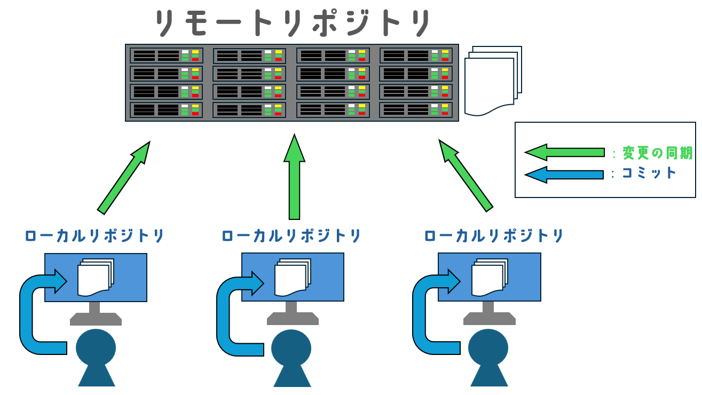
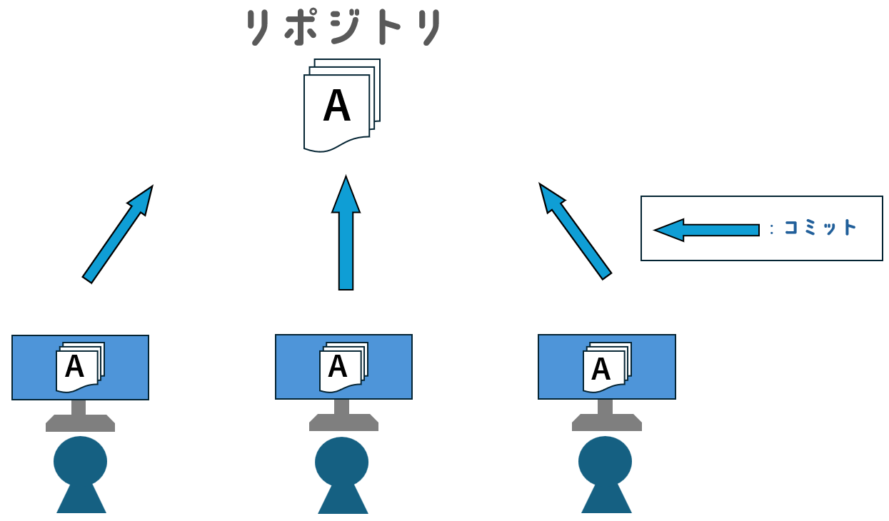
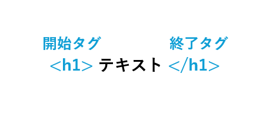
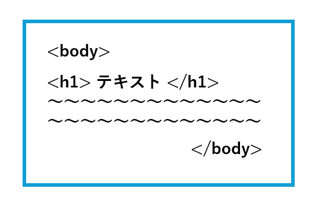
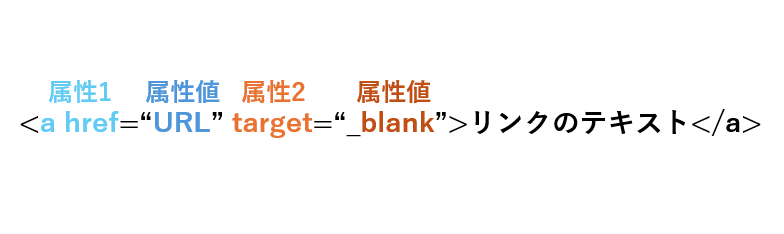

Gitとは、”分散・集中型バージョン管理システム”と言います。
これだけだとわかりづらいので、もう少し細かく説明すると、
「ファイルの変更履歴を簡単に管理できるツール」です！

↑画像イメージ1
また、Gitには次のような特徴もあります！
- 古いファイル、新しいファイル両方一元的管理できる
- 編集履歴を複数人で共有が可能
- 複数人で修正したファイルを結合することができる
このような特徴から、開発者にはうってつけのシステムなのです！！
Gitを簡単に図示すると、次のようになります！

↑画像イメージ2(分散型)
以下、専門用語の説明です。
【リポジトリ】
リポジトリとは、分かりやすく言うとファイルを保存しておく貯蔵庫
のことです。変更したデータなどは、このリポジトリに保存されます。
なお、Gitにおける”分散型”のリポジトリには2つの種類があるのです！
①”ローカルリポジトリ”と、
②”リモートリポジトリ”です！
【ローカルリポジトリ】
ローカルリポジトリとは、ユーザーごとに保存されるリポジトリのことを
言います。個人単位で変更した内容が、これに保存されるわけですね。
【リモートリポジトリ】
リモートリポジトリとは、ネットワークサーバーに保存されている
リポジトリです。
サーバーのネットワークに接続できる環境であれば、いつでもリポジトリを
閲覧や修正といったことが可能です。
【コミット】
コミットとは、ローカルリポジトリの編集を記録することをいい、
このコミットごとに変更履歴が作成されます。
この変更履歴は、なんといつでも遡ることができます！
【変更の同期】
変更の同期とは、”ローカル”リポジトリの変更内容を”リモート”リポジトリ
に反映させることを言います。
つまり、コミットをした段階ではまだネットワークサーバーには
保存されないため、リポジトリを共有するときには必ず同期しなければ
いけません。
他にも様々な用語がありますが、ここでは超基本的なもののみを
ピックアップしました。もっとたくさん知りたい人は、
こちらまで！！
参考：
【初心者向け】Gitとは何なのか。基本用語やその仕組みをまとめています。
ここまで説明したのは、”分散型”のGitでした。
従来は”集中型”が中心でしたが、今ではネットワーク上で使える分散型
が人気になっています。
「じゃあ、集中型との違いってなんだよ！」と思いますよね？
(思ってください笑)
分散型の仕組みを知ったあなたなら、なんと”集中型”の仕組みを理解するのは
非常に簡単です！
リポジトリが一つになって、それを複数人で共有するだけなのですから！！

↑画像イメージ3(集中型)
参考：
Gitとは？GitHubとの違いやメリットをわかりやすく解説！
HTMLとは、ハイパーテキスト・マークアップ・ランゲージ
（Hyper Text Markup Language）の略で、Webページを制作するための
”マークアップ言語”です。”マークアップ言語”とは、Webページ内のテキスト
情報の構成（タイトル・段落など）や役割をコンピュータが構造的に理解
できるようにするための言語です。
例えるならば、日本人が日本語を理解できるように、
コンピューターもコンピューター語(ここではマークアップ言語)
を理解できる、ということになるわけです。
逆に、日本人には日本語で情報を伝えるように、コンピューターにも
コンピューター語で伝えなくてはなりません！！
そんなHTMLには、”タグ”・”要素”・”属性”という基本用語があります。
【タグ】
タグとは、HTMLテキストに意味を付け足す印です。

↑画像イメージ4(タグ)
このように、タグは”開始タグ”と”終了タグ”に分かれていて、タグの中には
その内容を入れます。
例えばこの画像ですと、"h"タグはタイトルを示すタグなので、テキスト内の
文字は本文よりも大きくなります。
※なお、タグには多くの種類があり、それぞれに役割が与えられています。
詳しくは
こちら。
【要素】
要素とは、Webページを構成するテキスト情報のカタマリを指す用語です。

↑画像イメージ5(要素)
画像の青の枠線で囲まれたものをまとめて”要素”と呼びます。
詳しく解説すると、HTMLで作られたWebページは”head要素”と”body要素”の
2つに大別され、”head要素”にはコンピュータ向けの記述を、
”body要素”には実際にブラウザ表示させる記述をします。
つまり、画像のh要素やその他のテキストなどはbody要素の中にある、
と言えますね。
【属性】
属性とは、個々のタグに特定の動作や性質を与える記述のことを言います。

↑画像イメージ6(属性)
属性にはそれぞれ、対応する属性値を定める必要があります。
この画像では、属性1は他のネットページへリンクさせるというタグですが、
そのリンクのURLを属性値に入れます。
そうすることで、属性値に入れたURLへ飛ぶことができます。
属性2は、リンク先の開き方をどのようにするかという属性です。
ここでは"blank"、つまり新しいタブページでリンクを開くように
属性値を入れています。
参考：
HTMLとは？初心者向けに基礎知識を分かりやすく解説